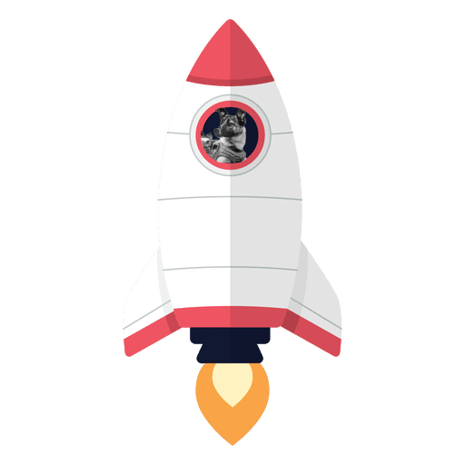

For years, the soviets claimed she survived 5 days, or that she had died of lack of oxygen or had been euthanized. However, it was only revealed in 2002 the real cause of her death.
The heat inside had reached 90 degrees. Within 7 hours, Laika had passed from overheating.
The Sputnik 2 was geared with food and water to last 7 days, but every scientist knew they would be sending Laika to her death.
On November 3rd, 1957, Sputnik 2 took off with 5 G’s of force. Despite her training, the tight space, noise, pressure, and lights terrified Laika.
Her heartbeat reportedly tripled, and her breath rate quadrupled.
The photo below shows the small space Laika had in the Sputnik 2 spacecraft
The Sputnik 2 was a rushed project. Sputnik 2 was intended to repeat the triumph of Sputnik 1, but Soviet scientists were on a tight deadline
Laika was one of many stray dogs from the streets of Moscow adopted and trained for the Sputnik. Laika was described to be very calm and of good temperament.

Laika was the first living creature sent to space. Part of the Sputnik 2 project developed by the Soviet
Union. But what was the 'Sputnik 2' project?

During the Space Race, the USSR successfully launched Sputnik— the first satellite that orbited space and sent radio signals back to the USSR. This was a huge win for the Soviets over the Americans, so with the success of Sputnik 1, they launched Sputnik 2.
Laika
The tragic tale of the the first dog in space
⬆️ Scroll up ⬆️
The story of the first living creature in space: Laika
Laika was a stray dog from the streets of Moscow sent to space. Her story is a tragic one, and serves as a reminder as to why dogs are mankind's best friend

